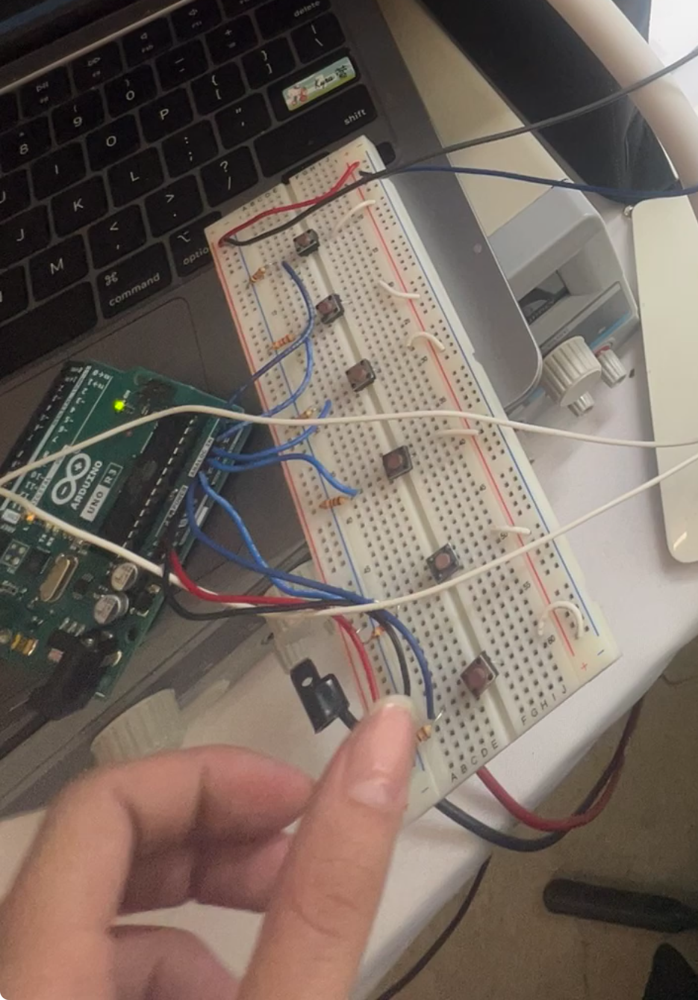

HEARTWING

introduction
I realized upon reflection that my time at PS70 has been decorated with visual art - interesting, doodle-driven and silly or wild ideas where I wouldn't suppress my urge to aestheticize. This is how I arrived at my final project idea: butterfly wings for music.
How do living things react to music? It is a current within us - sound - literally! I wanted to make an art piece that reflected that ethereal, spiky, strong force that sound evokes in us. At the same time, I wanted to experiment with fashion and art-robots, and the imagination of a mechanical heart.
DESIGN
This is the full sketchpad of all the ideas that kickstarted this project! As you can see, there were some ideas on the top right for the cosmetics of the music keyboard. However, I decided to focus more on the engineering of the heartwings for this semester's project! From the getgo, I wanted skeletal but elegant wings. The top would move, while the bottom would be fixed. In the future, I would be interested to look into an accordian motion (all the wings collapsing in distance at a constant rate), but for now, they were fixed on an acrylic back plate!After these considerations, I jumped into fusion and sketched it out, this time in vectors and volumes:
FABRICATION
I went ahead to laser cut the wings:

According to the proportions, I made a back plate, and measured it for Fusion:


All set! I proceeded to an incredibly painstaking process where I screwed both pieces together with M3 screws. I tapped the acrylic and drilled the wood with a slightly smaller drill bit than the M3 to ensure a tight, non-slip and secure union. This took me possible 3 or so hours, just because drill bits would retire, tapping bits broke, and I wanted to be meticulous about the appearance of the joint!

Now, a sneak peak of what's to come - the servo! I attached the servo on the wing (after some more painful drilling - 1 hour of delicate screwing!) and tested it with a single sweep code.
SERVO CODE
However, the two should sweep together, not separately! For this, I created two Servos, one left and one right, all corresponding to one changing variable of "servopos". While the left servo would respond to "servopos", the right servo would respond to "90-servopos". The wings were capable of sweeping only 90 degrees before colliding/before visual unpleasantness! Here is a video of them doing their first sweep: I added a music keyboard component to control the heights of the wings. I explain the code further in "Music Code" below, but here is the entire code file for the project: Here is the full code file, including theWING CIRCUITRY
I had a mini breadboard with an adhesive stuck to the back plate of the heart. This way it was conveniently placed between both servos, and also allowed for wire storage. I put the ground pins for each servo together, the power pins together, and the digital read pins separate. Then, I routed them back to the main breadboard.
MUSIC CODE
Now music. This was an unforseen challenge. In order to implement the keyboard portion of this project, I needed a MIDI cord and a MIDI interface. I had been fully set up to use VCV Rack to interpret the breadboard keyboard I would make:
However, since the lab had no MIDI cables, I turned to other options. First, I looked for a way to use MIDI without the cable. I had to download a Macbook Firmware Recognition software and short my circuit board to recognize itself as new firmware. I accessed the "DFU Programmer" Github Repo on my Macbook, downloaded it with homebrew, and attempted to run it. However, I quickly realized that it could only switch between being a MIDI firmware and an Arduino one. However, I needed it to be both; I was running the servos, the code for music recognition, and the keyboard on the same connection cable. Hence, this solution didn't work.
Problem solving led me to the Serial Monitor. Serial monitors open up ports that can be read from across the computer. There is a clear way to make every single button correspond to one Serial print, and for anothe program on my computer to run concurrently, recognizing each Serial print. I downloaded Processing for an easy IDE to implement this, and I sourced the code below. This uses an audio player built into the Processing Minim libraries (which I imported). When it hears "1" from the Serial port 9600, it will play the first note. Each note I recorded in Garageband and saved in a separate mp3 file. I was then able to import it into the directory where the Processing code ran.
MUSIC CIRCUITRY
This is a good old fashioned keyboard, made for the music demo! I attached them all to analog pins, as they did not need to be digital. This was also the intermediary breadboard for the Heartwings; a lot of wires coming from out of frame are the Power, Ground, and 2 Digital Pin wires from the wings!